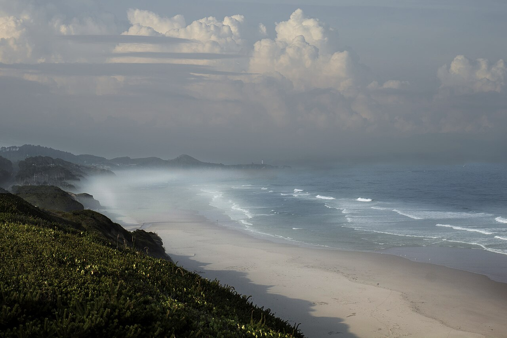
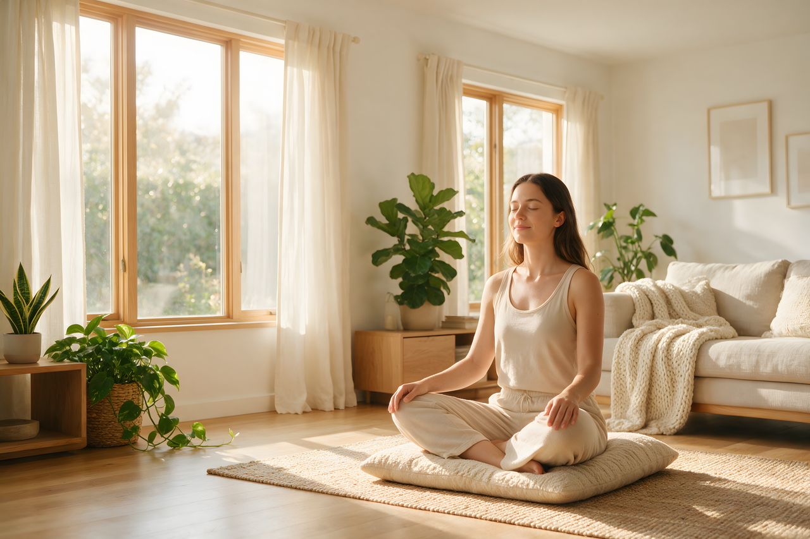

A private redwood grove near Mendocino
We hold Still Grove at a private retreat center tucked among old-growth redwoods, a short drive inland from the Mendocino coast. Fog often moves through the trees in the morning and burns off by midday. The exact address is sent by email upon registration, along with parking and arrival notes.

Photo: Bonnie Moreland from Oregon, United States / Wikimedia Commons (Public domain)
Getting there
Indoor studio, rain or shine
Sessions move outdoors when the weather allows — under the redwood canopy, most rain doesn't reach the forest floor. On wetter days, we move into a heated indoor studio on the same property. Either way, we practice.

Photo: Deedee Run / Wikimedia Commons (CC BY 4.0)
Lodging
Still Grove is a day retreat; there is no overnight stay included. For those traveling from a distance, the town of Mendocino and the nearby Anderson Valley offer a range of inns and cabins. We're happy to share suggestions by email once you register.